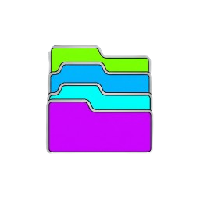

Carregue um arquivo PDF para iniciar a leitura.
Use o painel à esquerda.
✂️ Passo 2 de 2 — Confirmar Recorte
Descrição (opcional):
Modo de Inserção:
Fase Metodológica e Documento:

Carregue um arquivo PDF para iniciar a leitura.
Use o painel à esquerda.
Tópico de Destino:
Modo de Inserção:
Fase Metodológica e Documento:
De qual parte é este documento?
Para qual tópico esta imagem será enviada?
Descrição (opcional):
Modo de Inserção:
Fase Metodológica e Documento:
De qual parte é este documento?
Tópico de Destino:
Modo de Inserção:
Quem está falando?
Qualificado(a) por qual polo?
Transcrição / Resumo (opcional):
Selecione uma aba para editar ou excluir:
Descreva brevemente a tese jurídica deste grupo de provas:
Para onde deseja mover esta prova?
Deixe em branco para ir para o final, ou digite a posição exata:
Enquanto o Card Principal contém a prova bruta, o Nó de Ideia contém sua cognição. A intenção correta ensina a IA como tratar aquela informação na minuta.
<base_legal_obrigatoria>. A IA fundamenta a tese obrigatoriamente neste dispositivo.
<parametros_e_limitadores_da_condenacao>. Gera parágrafo de ressalva antes do dispositivo.
<decisao_magistrado_pretendida>. A IA usa sua decisão como o ponto de chegada obrigatório de toda a fundamentação.
<comandos_para_a_minuta>. Aplicado antes de redigir.
Digite a nova posição que este item deve assumir:
Os demais itens serão renumerados automaticamente.